磁気流体力学方程式に対する近似リーマン解法¶
- 著者
三好隆博（広島大学）、簑島敬（海洋開発研究機構）、松本洋介（千葉大学）
この章では、磁気流体力学(MHD)方程式に対する代表的な衝撃波捕獲法である近似リーマン解法について解説する。
基礎方程式¶
MHD方程式はプラズマの巨視的なダイナミクスを記述する基礎方程式である。特にここでは、電気抵抗率をゼロとした”理想”MHD方程式を考える。
MHD方程式¶
MHD方程式は、外力としてローレンツ力を作用させた流体方程式と磁場の時間発展方程式の組み合わせによって与えられる。無次元化した抵抗性MHD方程式は、
連続の式：
(1)¶
運動方程式：
(2)¶
断熱の式：
(3)¶
誘導方程式：
(4)¶
オームの法則：
(5)¶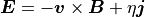
アンペールの法則：
(6)¶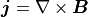
磁場に関するガウスの法則：
(7)¶
となる。ここで、 、 、  、 、 、 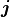 、
、 、 、 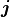 、  、
、  は、密度、速度、圧力、磁場、電場、電流、比熱比、電気抵抗率をそれぞれ表す。ラグランジュ微分は、 である。 (7) は磁束の保存を表わしており、 (4) の初期条件を与える。また、 (5) 、 (6) は見かけ上消去できる。したがって、最終的にMHD方程式は未知数8個の連立非線形偏微分方程式となる。特に電場が誘導電場のみで与えられるとき、すなわち (5) の がゼロのとき、散逸のない理想MHD方程式となる。
は、密度、速度、圧力、磁場、電場、電流、比熱比、電気抵抗率をそれぞれ表す。ラグランジュ微分は、 である。 (7) は磁束の保存を表わしており、 (4) の初期条件を与える。また、 (5) 、 (6) は見かけ上消去できる。したがって、最終的にMHD方程式は未知数8個の連立非線形偏微分方程式となる。特に電場が誘導電場のみで与えられるとき、すなわち (5) の がゼロのとき、散逸のない理想MHD方程式となる。
理想MHD方程式 (1) - (7) は、以下のとおり保存形式で書き直すことができる。
(8)¶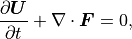
(9)¶![\mbox{\boldmath$U$} = \left(
\begin{array}{c}
\rho \\
\rho \mbox{\boldmath$v$} \\
\mbox{\boldmath$B$} \\
e
\end{array}
\right) , \quad
\mbox{\boldmath$F$} = \left(
\begin{array}{c}
\rho \mbox{\boldmath$v$} \\
\rho \mbox{\boldmath$v$} \mbox{\boldmath$v$} + p_T\mbox{\boldmath$I$} - \mbox{\boldmath$B$} \mbox{\boldmath$B$} \\
\mbox{\boldmath$v$} \mbox{\boldmath$B$} - \mbox{\boldmath$B$} \mbox{\boldmath$v$} \\
\left( e + p_T \right) \mbox{\boldmath$v$} - \mbox{\boldmath$B$} \left( \mbox{\boldmath$v$} \cdot \mbox{\boldmath$B$} \right)
\end{array}
\right).](_images/math/15d1890950a05091b6e018fb784cd83ad2084e6f.png)
ここで、 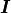 は単位行列を表す。全エネルギー密度  と全圧力 は、
と全圧力 は、
(10)¶
(11)¶
により関係付けられる。理想MHD方程式のヤコビアン 、
(12)¶
は独立な実固有値(特性速度)を持つ 1 。したがって、理想MHD方程式は双曲型保存則系である。
Footnotes
- 1
ただし、固有値が縮退し得るため、厳密には固有値は完全独立ではない。
1次元理想MHD方程式¶
この後の議論のため、改めて1次元の理想MHD方程式を書き下す。
(13)¶
(14)¶
ここで、 、 とした。また、
(15)¶
(16)¶
ただし、ガウスの法則 (7) から、1次元問題では、  は 時間・空間的に一定 となる。
は 時間・空間的に一定 となる。
ヤコビアン の固有値 は、 (14) から、2つのアルヴェン波、2つの速進磁気音波、2つの遅進磁気音波、1つのエントロピー波として、
(17)¶
が得られる。ここで、
(18)¶![\begin{array}{c}
c_a = |b_x|, \
c_{f/s} = \sqrt{ \frac{1}{2} \left[
a^2 + b^2 \pm \sqrt{ \left( a^2 + b^2 \right)^2 - 4 a^2 b_x^2 } \right] }, \\
a = \sqrt{\frac{\gamma p}{\rho}}, \
b_x = \frac{B_x}{\sqrt{\rho}}, \
b_y = \frac{B_y}{\sqrt{\rho}}, \
b_z = \frac{B_z}{\sqrt{\rho}}, \
b^2 = b_x^2+b_y^2+b_z^2.
\end{array}](_images/math/5b0927b0043485171c92590757b443b668d2e159.png)
これから、
(19)¶
の不等式が成り立ち、磁場の向きや強さによって固有値が縮退し得ることがわかる。
一般に双曲型保存則系は、弱解(積分形の保存則を満たす解)として衝撃波解や不連続解を持つことが知られている。特に理想MHD方程式では、磁場の強さや向きによって不連続解は全く異なる性質を持つ。衝撃波の後面で磁場が強められる速進衝撃波、磁場が弱められる遅進衝撃波、衝撃波面がアルヴェン速度で伝播するアルヴェン衝撃波が衝撃波解として存在する。ただし、アルヴェン衝撃波では、
(20)¶
の条件が成り立ち、衝撃波の前後で熱力学的量に変化がないので、回転不連続(rotational discontinuity)とも呼ばれる。ここで、 は不連続前後の物理量の差を表す。
また、エントロピー波と共に伝播する不連続解として、
(21)¶
を満足する接触不連続(contact discontinuity)、
(22)¶
を満足する接線不連続(tangential discontinuity)が存在する。この他にもMHD方程式では、複合波(compound wave)や過圧縮衝撃波(overcompressible shock)など普通の衝撃波でない衝撃波(非古典的衝撃波)の存在が指摘されている。
近似リーマン解法¶
双曲型保存則系で生ずる不連続解を数値的に安定に解くため、特性の理論に基づく風上法が活発に開発研究され、大きな成功を収めてきた。このような衝撃波(不連続解)を鋭く捕らえることができる解法を衝撃波捕獲法と呼ぶ。特にオイラー方程式に対しては、近似リーマン解法や流束ベクトル分離法、さらにはAUSM(Advection Upstream Splitting Method)系スキームといった様々なタイプの衝撃波捕獲法が開発された。流束ベクトル分離法は、オイラー方程式の流束関数 が保存変数 の一次同次関数 であることを利用して、 を正負の固有値を持つ流束関数 に分離する方法である。一方、MHD方程式は であり、 の構築は困難である。AUSM系スキームでは、流束関数を移流項と音波による擾乱項に分離し、それぞれを風上化する 2 。MHD方程式ではアルヴェン波が存在するため、既存のAUSM系スキームを素直に適用することはできない 3 。したがって、MHD方程式に対する実践的な衝撃波捕獲法としては、近似リーマン解法が用いられることがほとんどである。
近似リーマン解法のアルゴリズム。Step 1. 物理量を区分的定数関数によって近似する。Step 2. 各セル境界でリーマン問題を近似的に解く。Step 3. 各セル内でリーマン問題の解を積分する。¶
流束ベクトル分離法がセル内の特性速度の符号により流束分離を行うのに対し、近似リーマン解法ではセル境界の特性速度の情報を用いて流束の風上化を行う。近似リーマン解法の手続きを 近似リーマン解法のアルゴリズム図 に示す。初期条件として、物理量を各セル内で一定となるよう区分的定数関数で与える。このとき各セル境界において物理量が不連続になるため、初期値問題は各セル境界におけるリーマン問題(衝撃波管問題)に帰着する。最終的に、各セル内でリーマン問題の解を積分することによって、ある区分的定数関数として次の時刻の解が近似的に求められる。この手続きを繰り返すことにより、双曲型方程式を数値的に解くことができる。特に、各セル境界でリーマン問題を厳密に解く方法をGodunov法と呼ぶ。
における双曲型保存則系のリーマン問題。¶
ここで、 における双曲型保存則系の時空間保存、
(23)¶
を考える。リーマン問題の解を とすると、 (23) は、
(24)¶
ただし、
(25)¶
となる（ リーマン問題の図 ）。ここで、 、 。数値流束 は、 の時空間保存から、
(26)¶
と与えられる。ただし、  は最小固有値(最小の特性速度)で負とする。 の場合、超音速問題となるため、 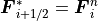 と風上側の流束で置き換えられる。保存則の対称性から、
は最小固有値(最小の特性速度)で負とする。 の場合、超音速問題となるため、 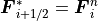 と風上側の流束で置き換えられる。保存則の対称性から、
(27)¶
も成立し、 (26) と一致する。ただし、 は最大固有値(最大の特性速度)で正とする。
オイラー方程式やMHD方程式は極めて高度な非線形システム方程式であり、リーマン問題の厳密解を求めるためにはニュートン法などの反復計算が必要になる。一方、Godunov法では最終的に各セル内でリーマン問題の解を平均化するため、 解の詳細な情報は失われる。そこで、リーマン問題の厳密解の代替えとなる性質のよい近似解の探索が重要となる。一般に、リーマン問題の近似解を用いて数値流束を評価する解法を近似リーマン解法、またはGodunov型解法と呼ぶ。
これ以降、セル境界左右の状態を示す添え字をそれぞれ  、
、  とする。
とする。
Footnotes
線形近似リーマン解法¶
においてヤコビアン を一定とする近似リーマン解法、つまり 局所的に基礎方程式を線形化 する近似法を線形近似リーマン解法と呼ぶ。
ヤコビアン  を、正または負の固有値のみを持つヤコビアン に分離する。ここで は、 に対する固有値行列 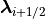 と右固有行列 を利用して、
を、正または負の固有値のみを持つヤコビアン に分離する。ここで は、 に対する固有値行列 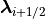 と右固有行列 を利用して、
(28)¶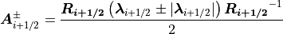
と与えられる。したがって、
(29)¶
ただし、
(30)¶
である。右に進む波をまたぐジャンプ条件から、
(31)¶
同様に左に進む波をまたぐジャンプ条件から、
(32)¶
が得られる。最終的に数値流束を対称化して表すと、
(33)¶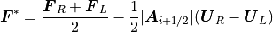
となる。一般に、この解法は線形近似リーマン解法と呼ばれる。流束の差 を と分離することから流束差分離法とも呼ばれる。特に、ジャンプ条件が正しく評価されるよう、
(34)¶
を満足する を与える解法はRoe法 4 と呼ばれ、最もスタンダードな近似リーマン解法としてよく知られている。
ただし、実際にMHD方程式に線形近似リーマン解法を適用するには様々な工夫が必要となる。MHD方程式では固有値( (17) )が縮退し得るため、固有ベクトルに特異性が出現する。そのため固有ベクトルの適切な再規格化が必要となる 5 。また、  以外の場合、Roe法に対するヤコビアン を求めることは容易ではない 6 。
以外の場合、Roe法に対するヤコビアン を求めることは容易ではない 6 。
線形近似リーマン解法では全ての波が考慮されており、各種不連続解を正しく解像できる。一方で、膨張波(希薄波)が無視されているため、密度および圧力の正値性が破れることが証明されている。特にMHD方程式では、磁気エネルギーの寄与分のため、オイラー方程式に比べてさらに正値性の条件は非常に厳しく、計算困難な初期条件が広く存在する。
Footnotes
- 4
(34) に加えて、 が独立な実固有値を持ち、ヤコビアンの適合性 を満足する必要がある。これらの性質は合わせてProperty Uと呼ばれる。
- 5
ここでは参考文献をあげるにとどめる。 Brio & Wu, JCP (1988)
- 6
ここでは参考文献をあげるにとどめる。 Cargo & Gallice, JCP (1997) , Balsara, ApJS (1998)
HLL近似リーマン解法¶
HLL型の近似リーマン解法 7 では、膨張波も含めて最も速い特性速度  と最も遅い速度 に囲まれた領域、 における時空間保存則、
と最も遅い速度 に囲まれた領域、 における時空間保存則、
(35)¶
を満足するよう近似解が求められる。
HLL近似リーマン解法における(a)近似解の模式図と(b)数値流束評価のための積分経路。¶
特にHLL法では、 と に囲まれた領域(リーマンファン)においてリーマン問題の解が単一状態 であると仮定 する。 (35) から、
(36)¶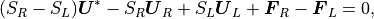
したがって、
(37)¶
が得られる( HLL近似リーマン解法図(a) )。続いて、 における時空間保存( HLL近似リーマン解法図(b) )から、
(38)¶
となる。ただし、数値流束  は、
は、
(39)¶
と定義される。 (37) を (38) に代入すると、 は最終的に、
(40)¶
となる。もちろん、 の保存則からも (40) は得られる。HLL法は非線形の近似解法であり、 であることに注意する必要がある。
HLL法の数値流束 (40) を評価するためには、 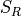 と の情報が必要である。MHD方程式の特性速度は形式的には (17) と与えられる。しかし、厳密な 、 を得るためには、リーマン問題を厳密に解く必要がある。そこで、 、 を過小評価しないよう近似的に、
(41)¶
または
(42)¶
のように与えられる。また、特にRoe平均値 (34) を用いて、
(43)¶
とも評価される。 、 の場合についても、 (40) が片側の流束  、 に帰着できるよう、 、 は一般に、
、 に帰着できるよう、 、 は一般に、
(44)¶
と拡張される。
HLL法は や の詳細によらず非常にシンプルであり、固有ベクトルの計算も不要で計算効率が極めて高い。また、オイラー方程式およびMHD方程式に対して正値性が理論的に証明されており、極めてロバストである。しかし、リーマンファン内を単一状態と仮定しているため、接触不連続や回転不連続などを捕らえることができず、低解像度で数値的散逸が強い。
Footnotes
- 7
HLL法の提案者であるHarten(TVD/ENOの提案者)、Lax (双曲型保存則系業界の創始者)、van Leer(MUSCLの提案者)の頭文字。
HLLD近似リーマン解法¶
続いて、接触不連続や回転不連続を解像できる高解像度HLL型近似リーマン解法、HLLD法 8 （ Miyoshi & Kusano, 2005 ） を検討する。
HLLD近似リーマン解法における近似解の模式図。¶
HLLD法では、 リーマンファンにおいて速度 が一定と仮定 する。この仮定から、リーマンファン内で加速や減速が生じないよう、全圧力 が一定であることも要求される( HLLD近似リーマン解法図(b) )。したがって、リーマンファン内は非圧縮状態となり、リーマン問題の解から遅進衝撃波は除外される。このことから、リーマン問題の近似解は、2つの速進衝撃波 、 、 2つのアルヴェン波 、 、1つのエントロピー波 で分割された4つの状態(リーマンファンの左から  、 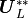 、 、 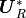 と表記)となる(HLLD近似リーマン解法図(a))。
、 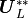 、 、 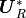 と表記)となる(HLLD近似リーマン解法図(a))。
リーマンファンにおける速度  はエントロピー波の速度 と一致する。ここで は、時空間保存則 (37) を用いて、
はエントロピー波の速度 と一致する。ここで は、時空間保存則 (37) を用いて、
(45)¶
と与える。速度 はリーマンファン内で一定なので、
(46)¶
となる。また全圧力 も、
(47)¶
と一定である。
まず、速進衝撃波 (  は または )に対するジャンプ条件、
は または )に対するジャンプ条件、
(48)¶![S_\alpha \left(
\begin{array}{l}
\rho_\alpha^\ast \\
\rho_\alpha^\ast S_M \\
\rho_\alpha^\ast v_\alpha^\ast \\
\rho_\alpha^\ast w_\alpha^\ast \\
{B_y}_\alpha^\ast \\
{B_z}_\alpha^\ast \\
e_\alpha^\ast
\end{array}
\right)
- \left(
\begin{array}{l}
\rho_\alpha^\ast S_M \\
\rho_\alpha^\ast S_M^2 + p_T^\ast - B_x^2 \\
\rho_\alpha^\ast v_\alpha^\ast S_M - B_x {B_y}_\alpha^\ast \\
\rho_\alpha^\ast w_\alpha^\ast S_M - B_x {B_z}_\alpha^\ast \\
{B_y}_\alpha^\ast S_M - B_x v_\alpha^\ast \\
{B_z}_\alpha^\ast S_M - B_x w_\alpha^\ast \\
(e_\alpha^\ast + p_T^\ast) S_M
- B_x (\mbox{\boldmath$v$}_\alpha^\ast \cdot \mbox{\boldmath$B$}_\alpha^\ast)
\end{array}
\right)
= S_\alpha \left(
\begin{array}{l}
\rho_\alpha \\
\rho_\alpha u_\alpha \\
\rho_\alpha v_\alpha \\
\rho_\alpha w_\alpha \\
{B_y}_\alpha \\
{B_z}_\alpha \\
e_\alpha
\end{array}
\right)
- \left(
\begin{array}{l}
\rho_\alpha u_\alpha \\
\rho_\alpha u_\alpha^2 + {p_T}_\alpha - B_x^2 \\
\rho_\alpha v_\alpha u_\alpha - B_x {B_y}_\alpha \\
\rho_\alpha w_\alpha u_\alpha - B_x {B_z}_\alpha \\
{B_y}_\alpha u_\alpha - B_x v_\alpha \\
{B_z}_\alpha u_\alpha - B_x w_\alpha \\
(e_\alpha + {p_T}_\alpha) u_\alpha
- B_x (\mbox{\boldmath$v$}_\alpha \cdot \mbox{\boldmath$B$}_\alpha)
\end{array}
\right),](_images/math/071318e6ff33646148ea79b3567b5877e4058cf7.png)
を考えよう。第2式から、
(49)¶
が得られる。続いて第1式から、
(50)¶
となる。第3式と第5式を連立させて、
(51)¶
(52)¶
が得られる。同様に、第4式と第6式から、
(53)¶
(54)¶
が得られる。最後に第7式から、
(55)¶
となる。
続いて、アルヴェン波 に対するジャンプ条件を考える。 のジャンプ条件、すなわち連続の式から明らかに、任意の に対し、
(56)¶
が成り立つ( HLLD近似リーマン解法図(c) )。したがって、アルヴェン波の速度は、
(57)¶
と与えられる。ところが、 (57) を用いると、 、 のジャンプ条件、
(58)¶![S_\alpha^\ast \left(
\begin{array}{l}
\rho_\alpha^\ast v_\alpha^{\ast \ast} \\
\rho_\alpha^\ast w_\alpha^{\ast \ast} \\
{B_y}_\alpha^{\ast \ast} \\
{B_z}_\alpha^{\ast \ast} \\
\end{array}
\right)
- \left(
\begin{array}{l}
\rho_\alpha^\ast v_\alpha^{\ast \ast} S_M - B_x {B_y}_\alpha^{\ast \ast} \\
\rho_\alpha^\ast w_\alpha^{\ast \ast} S_M - B_x {B_z}_\alpha^{\ast \ast} \\
{B_y}_\alpha^{\ast \ast} S_M - B_x v_\alpha^{\ast \ast} \\
{B_z}_\alpha^{\ast \ast} S_M - B_x w_\alpha^{\ast \ast} \\
\end{array}
\right)
= S_\alpha^\ast \left(
\begin{array}{l}
\rho_\alpha^\ast v_\alpha^\ast \\
\rho_\alpha^\ast w_\alpha^\ast \\
{B_y}_\alpha^\ast \\
{B_z}_\alpha^\ast \\
\end{array}
\right)
- \left(
\begin{array}{l}
\rho_\alpha^\ast v_\alpha^\ast S_M - B_x {B_y}_\alpha^\ast \\
\rho_\alpha^\ast w_\alpha^\ast S_M - B_x {B_z}_\alpha^\ast \\
{B_y}_\alpha^\ast S_M - B_x v_\alpha^\ast \\
{B_z}_\alpha^\ast S_M - B_x w_\alpha^\ast \\
\end{array}
\right),](_images/math/572639d18de8b62e828638d061fff0d2d7bc900f.png)
から、 、  を解くことができない。一方、 に対する 、 のジャンプ条件、
を解くことができない。一方、 に対する 、 のジャンプ条件、
(59)¶![S_M \left(
\begin{array}{l}
\rho_L^\ast v_L^{\ast \ast} \\
\rho_L^\ast w_L^{\ast \ast} \\
{B_y}_L^{\ast \ast} \\
{B_z}_L^{\ast \ast} \\
\end{array}
\right)
- \left(
\begin{array}{l}
\rho_L^\ast v_L^{\ast \ast} S_M - B_x {B_y}_L^{\ast \ast} \\
\rho_L^\ast w_L^{\ast \ast} S_M - B_x {B_z}_L^{\ast \ast} \\
{B_y}_L^{\ast \ast} S_M - B_x v_L^{\ast \ast} \\
{B_z}_L^{\ast \ast} S_M - B_x w_L^{\ast \ast} \\
\end{array}
\right)
= S_M \left(
\begin{array}{l}
\rho_R^\ast v_R^{\ast \ast} \\
\rho_R^\ast w_R^{\ast \ast} \\
{B_y}_R^{\ast \ast} \\
{B_z}_R^{\ast \ast} \\
\end{array}
\right)
- \left(
\begin{array}{l}
\rho_R^\ast v_R^{\ast \ast} S_M - B_x {B_y}_R^{\ast \ast} \\
\rho_L^\ast w_R^{\ast \ast} S_M - B_x {B_z}_R^{\ast \ast} \\
{B_y}_R^{\ast \ast} S_M - B_x v_R^{\ast \ast} \\
{B_z}_R^{\ast \ast} S_M - B_x w_R^{\ast \ast} \\
\end{array}
\right),](_images/math/2595d6c4a6b717611a2475eea61b92eb7318da0e.png)
から、
(60)¶
(61)¶
(62)¶
(63)¶
となる( HLLD近似リーマン解法図(d) )。そこで、リーマンファンの時空間保存則 (35) 、
(64)¶
を利用すると、
(65)¶
(66)¶
(67)¶
(68)¶
が得られる。ここで、 は符号関数である。最後に に対する のジャンプ条件から、
(69)¶
(70)¶
が得られる。ただし、 、 。
以上、リーマンファンにおける4つの状態、 、 、 、 が完全に代数的に得られた。
数値流束 は、HLL法と同様に、 または における時空間保存則から求められる。例えば、 の場合、
(71)¶
から、 の場合、
(72)¶
から が得られる。最終的に、
(73)¶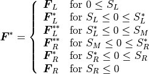
となる 9 。ただし、
(74)¶
である。 と は、HLL法と同様に、例えば、 (41) から (44) のように評価する。特に磁場がゼロのとき、この解法はオイラー方程式に対するHLLC法に帰着する。
HLL法と異なり、HLLD法ではMHD方程式の接触不連続や回転不連続、接線不連続を正確に解像できる。また、密度および圧力の正値性の保存性も理論的に保証される( 付録 ) 10 。様々な数値実験の結果から、線形近似リーマン解法と同等の解像度を持ちつつ、線形近似リーマン解法に比べ計算効率が高いことも示されている。したがって、HLLD法は、解像度、ロバストさ、計算効率の全てに優れたMHD解法といえる。
Footnotes
高次精度化¶
近似リーマン解を得るために必要な、あるセル境界 に対する左・右状態である と は、単純には 、 より与えられる。この解は最も安定（上記よりスカラ変数の正値性が保証）である一方、数値粘性が過多に含まれていることになり、得られる構造は時間と共に急速に散逸する。また空間1次精度である。本節では、 近接するより多くのセルの情報を取り入れることにより、 、 を高精度に求める方法を解説する。以下では、 における左・右状態をそれぞれ で表す。
一般に、同じ解像度の結果を得るためには、多くのセル数を使って低次精度のスキームで解く場合に比べて、少ないセル数で高次精度スキームを用いたほうが必要な計算量は少なくてすむ。これは、セル幅（  ）に対して で計算量が増加する（3次元計算の場合）のに対して、高次精度化にともなう計算量の増加は、せいぜい数倍に留まるためである。また、近年のスカラ型スーパーコンピュータにおいては、セルあたりの演算量を増やした方がより効率的にCPUの能力を活用できることも、スキームの高次精度化に伴うメリットであると言える。
）に対して で計算量が増加する（3次元計算の場合）のに対して、高次精度化にともなう計算量の増加は、せいぜい数倍に留まるためである。また、近年のスカラ型スーパーコンピュータにおいては、セルあたりの演算量を増やした方がより効率的にCPUの能力を活用できることも、スキームの高次精度化に伴うメリットであると言える。
高次精度化を図るためには多項式による数値補間が必要であるが、不連続面近傍において数値振動の元となる。2次以上の線形スキームでは解の単調性を維持できないことが知られている（Godunovの定理、 前章「差分の基礎」 ）。従って、不連続面近傍において単調性を維持することができるような（1次精度に落とす）非線形スキームの開発が必要となる。以下では、代表的な2次精度の MUSCL法 、5次精度の WENO法 、 CANS+ で採用されている5次精度の MP5法 について解説する。
MUSCL補間¶
van Leer (1979) が提唱した、MUSCL (Monotone Upstream-centered Schemes for Conservation Laws) 補間と呼ばれる。着目するセル内の物理量を関数 で表し、
(75)¶
でセル内のプロファイルを構築する。ここで、
(76)¶
である。 のとき、セル内を2次関数で表現（3次精度）することに相当する。
式 (75) より、 、 は、
(77)¶
(78)¶
式 (77) 、 (78) をそのまま採用すると不連続面近傍で数値振動が発生する。数値振動を発生させないためには、全変化量TV（Total Variation）
(79)¶
が時間と共に増加しない、TVD（Total Variation Diminishing）条件
(80)¶
を満たす必要がある。そこで、TVD条件を満たすような流束制限関数 を以下のように導入する。
(81)¶
(82)¶
ここで、流束制限関数 は の関数である。以下では、数ある制限関数のうち代表的なminmod関数およびmonotonized centralを例に挙げる（ CANS+ でも実装されている）。両制限関数は の関係があるので、その場合、
(83)¶
(84)¶
となる。
 の符号を返す関数である。
の符号を返す関数である。WENO法¶
Weighted Essentially Non-Oscillatory （WENO）法とは、Liuら（ Liu et al., 1994 ）によって開発され、その後Jiangら（ Jiang & Shu, 1996 ）によって改良された、双曲型方程式を高精度かつ安定に解く数値手法であり、現在は特に圧縮性流体の高解像度シミュレーションに広く利用されている。WENO法では、物理量のセル平均値
(93)¶
を保持し、セル境界の物理量 を非線形補間で近似する。
最もポピュラーな5次精度WENO法を例に挙げる。ステンシル において、左に偏りを持たせて、 の左状態 を求めよう（対称性から の右状態 も求めることが出来る）。ステンシルを次の3つのサブステンシル
に分割し、各サブステンシルにおいて を線形ラグランジュ補間で近似する。
(94)¶
(95)¶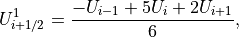
(96)¶
これらを用いて、 を重み付き平均で近似する。
(97)¶
ここで重み は を満たし（凸結合）、さらに以下のルールに基づいて決定される。
滑らかなサブステンシルでは大きく、不連続を含むサブステンシルでは小さくする。
全てのステンシルの滑らかさが同じならば、最大精度を達成する。これは5点を用いた線形ラグランジュ補間で与えられる。
これらを満たす重み は様々あるが、ここでは標準的な例（ Jiang & Shu, 1996 ）を紹介しよう。
(98)¶
(99)¶
(100)¶
(101)¶
(102)¶
ここで  はゼロ除算防止のための小さな値（ 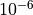 程度）である。どうしてこのような表式が提案されたかについては、原論文をご覧頂きたい。
はゼロ除算防止のための小さな値（ 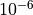 程度）である。どうしてこのような表式が提案されたかについては、原論文をご覧頂きたい。
重み が適切に与えられることで、不連続面近傍では振動が抑えられ（不連続面を含むサブステンシルの 他の  ）、滑らかな領域（
）、滑らかな領域（  ）では高精度が維持される。これまでの式からわかる通り、WENO法は全て代数計算のみを用いており、IF文などの論理計算を用いない。これはコンピュータにとって解読しやすく（ベクトル化されやすい）、計算効率に優れている。近年も改良が進められ、WENO-M（ Henrick et al., 2005 ）やWENO-Z（ Borges et al., 2008 ）などの新しい手法が提案されている。
）では高精度が維持される。これまでの式からわかる通り、WENO法は全て代数計算のみを用いており、IF文などの論理計算を用いない。これはコンピュータにとって解読しやすく（ベクトル化されやすい）、計算効率に優れている。近年も改良が進められ、WENO-M（ Henrick et al., 2005 ）やWENO-Z（ Borges et al., 2008 ）などの新しい手法が提案されている。
MP5法¶
MP5法とは、5次精度のMonotonicity Preserving (MP) schemeで、SureshとHuynh（ Suresh & Huynh, 1997 ）によって開発された手法であり、 CANS+ の高次精度補間スキームとして採用されている。 WENO法 と同様に、物理量のセル平均値
(103)¶
を保持し、セル境界の物理量 を非線形補間で求めることを考える。以下では、ステンシル において、 の左状態 を求めよう（対称性から の右状態 も求めることができる）。
MP5法では、5点のステンシルを使って4次多項式 を構築する。多項式の係数は、 それぞれにおける式 (103) の束縛条件より決定される。それより、 における補間値は
(104)¶
で与えられる。得られた解は、スムーズな領域では5次の精度となるが、当然、不連続面では数値振動をもたらす。上記 MUSCL法 で議論したような、いわゆるTVDスキームを採用することで不連続面での数値振動は回避できるが、TVDスキームは波の伝搬を正確に解けないという弊害があることが知られている。これは、たかだか３点の情報では滑らかな関数の極値なのか、不連続面なのかの判定ができないからである（ 図参照 ）。
セル周辺のプロファイルの判定。着目するセル（  ）を中心とした３点（●）では、左のプロファイル（実線）と右のプロファイルとの区別ができない。外側２点（○）を加えた５点で初めて形状の判定を行うことができる。¶
）を中心とした３点（●）では、左のプロファイル（実線）と右のプロファイルとの区別ができない。外側２点（○）を加えた５点で初めて形状の判定を行うことができる。¶
MP5法は、このように５つのセルの情報を使って周辺のプロファイルを判定し、 図左 のような滑らかな曲線の場合は式 (104) で求められた値を採用し、 図右 のような不連続形状であると判定された場合は、単調性が維持できるような値を補間値の代わりに使う、というものである。つまり、 がある許容範囲内に収まるように 関数を用いて を更新する。
(105)¶
ここで、 は3変数のうちの中央値を採択する関数で、上記 関数を用いて
(106)¶
によって実装される。式 (104) で補間した が の場合はそのまま が採択され、例えば、 の場合は が採択される。 , の求め方については、 原論文 を参照いただきたい。
多次元化¶
時間更新手順¶
式 (8) を時空間で差分化した方程式に基づき、セル  における時間更新は、
における時間更新は、
(107)¶
で行われる。（関連しない添字 は省略した。以下同様。）ここで、 、 、 は各方向のセル境界における数値フラックスで、それぞれ
(108)¶
(109)¶
(110)¶
で与えられ、また、 , , , , , は各次元方向周辺のセルから求める。例えば、 CANS+ で採用されている MP5法 では
(111)¶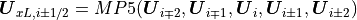
(112)¶
(113)¶
のようにして求める。
磁場の発散の数値的処理¶
マクスウェル方程式は磁場のソレノイダル性
(114)¶
を保証しているが、多次元の数値計算においては必ずしも保証されていない（1次元（x方向）では を一定とすることにより満たされる）。計算の途中に有限の値が一度生じてしまうと、それは時間とともに増加していくため、いずれ計算の破綻をきたす。特に保存系での解法では運動方程式のローレンツ力項、
(115)¶
より磁力線に水平方向への数値的加速が生じるため、数値計算上大きな影響を受ける。
Orszag-Tang渦問題のシミュレーション結果。(a)プロジェクション法（後述）による磁場補正をした場合。(b)磁場補正なし。¶
例えば Orszag-Tang渦問題の図 はOrszag-Tang渦問題を解いたもので、 Orszag-Tang渦問題の図５(a) はプロジェクション法（後述）による磁場補正をした場合、 Orszag-Tang渦問題の図５(b) は補正をしない場合である。補正しない場合は局所的に、特に、不連続面近傍で磁場のソレノイダル性が破れており、それが広範囲に影響を及ぼし補正した場合と違った結果を導くばかりか、それが原因となり計算が破綻する。したがって多次元のMHDシミュレーションにおいては、いかにして磁場のソレノイダル条件（  ）を満たしながら計算を行うことかが重要な課題となっている。本小節では磁場のソレノイダル性を（ある程度）保証する手法について4つ手法を例にとり、紹介していく。
）を満たしながら計算を行うことかが重要な課題となっている。本小節では磁場のソレノイダル性を（ある程度）保証する手法について4つ手法を例にとり、紹介していく。
プロジェクション法¶
次の手法として Brackbill & Barnes, 1980 らによって提唱されたプロジェクション法を挙げる。これは時間更新した磁場を補正することにより、ある精度で磁場のソレノイダル条件を満たす手法である。ある数値解法での時間更新後の磁場を と表記すると、ソレノイダル条件を満たす磁場 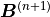 を求めるには、スカラポテンシャル  を導入して
を導入して
(116)¶
のように磁場を補正し更新する。 は
(117)¶
のポアソン方程式より求めることができる。この修正方法は一様なデカルト座標系においては最も補正量の少ない修正法であることが数学的に証明されている（ Toth, 2000 ）。プロジェクション法は磁場自体を補正するため、どの数値計算手法とも相性がよい一方、ポアソン方程式を解く必要があるため、その分計算コストが増える。しかし必ずしも厳密に を求める必要はなく、ある程度の精度で が求まれば充分であることが多い。この場合SOR法や共役勾配法などの反復法が有効であり、さほど計算コストを増やすことなく磁場の補正が可能である。
CT法¶
プロジェクションでは磁場を補正したのに対して、以下に挙げるCT法では磁場の配置を工夫することにより磁場のソレノイダル条件が丸め誤差の範囲で満たされる（ Evans & Hawley, 1988 ）。
CT法で使われる物理量のグリッド上への配置方法。¶
CT法でのグリッド配置図 はCT法で使われている物理量の配置方法を表したものである。磁場はセル境界面の中心に面に垂直な磁場成分を配置する。磁場の時間発展には電場の情報が必要であるが、セルの角に定義した電場を使って磁場の誘導方程式を解く。例えば2次元の場合、
(118)¶
(119)¶
のように差分化した形で解く。その結果、差分化した  、つまり、
、つまり、
(120)¶
は時間更新前後で維持される。これは、式 (118) 、 (119) の左辺を式 (120) に代入すると明らかで、式 (118) 、 (119) の右辺の電場が相殺することにより
(121)¶
の関係が導かれる。CT法は磁場の離散化についてのみ規定しており、流体量（2次元の場合は面に垂直な磁場 も）の離散化は任意である。そこでこれらを有限体積法に基づいてセル中心に定義した場合の、CT法との組み合わせ方について述べる。
有限体積法への実装¶
以下は簡単のため2次元の場合だが、3次元への拡張は容易である。
セル境界面の磁場 からセル中心の磁場を補間する。例えば線形補間では
全ての物理量がセル中心に配置されたので、任意の衝撃波捕捉法を用いて、セル境界面における数値流束 を求める。誘導方程式の 成分の数値流束は電場の
 成分なので、 が求められたことになる。
成分なので、 が求められたことになる。セル境界面の電場を用いて、セルの角の電場 を補間する。最も簡単なのは算術平均（ Balsara & Spicer, 1999 ）である。式 (122) は実装が容易だが、中心補間なので数値振動が発生する場合がある。これを抑制するために、例えば風上方向を考慮した補間方法（ Gardiner & Stone, 2005 ）や、セルの角で誘導方程式について再度衝撃波捕捉法を用いて電場を求める方法（ Londrillo & Del Zanna, 2004 , Del Zanna et al., 2007 ）など、様々な方法が提案されている。
(122)¶

Orszag-Tang渦問題のシミュレーション結果。（左）温度。（右）磁場の発散。¶
CT法のOrszag-Tang渦問題テスト図 は式 (122) に基づいたCT法をOrszag-Tang渦問題に適用した結果である。右図より、磁場のソレノイダル条件が計算機精度の範囲で満たされていることがわかる。
移流拡散法¶
移流拡散法は  の存在を許容しつつも、その場に留まらないように移流（伝搬）・拡散させて計算の破綻を回避しようという発想の手法である。
の存在を許容しつつも、その場に留まらないように移流（伝搬）・拡散させて計算の破綻を回避しようという発想の手法である。
8 wave法¶
Powell ( cf. Powell et al., 1999 )が提唱した手法は、MHD方程式 (8) に  に比例したソース項を導入して解く方法である。
に比例したソース項を導入して解く方法である。
(123)¶
(124)¶
本形式では、 の移流（拡散）を含んでいるため、8 wave formulationと呼ぶ。Powellの手法は 誤差を数値的に拡散させながら流れに乗せて逃すことに相当する。しかし、流れの澱み点では数値拡散しか効かず、 が溜まってしまうという欠点がある。また、保存形で書かれていないため、衝撃波のジャンプ条件を正しく満たさない。一方で、本形式はガリレイ不変の形をしているという特性がある（通常のMHD方程式はガリレイ不変でない Powell et al., 1999 ）。
9 wave法¶
Dedner ( Dedner et al., 2002 )らが提案した方法は、
(125)¶
(126)¶![\mbox{\boldmath$U$} = \left(
\begin{array}{c}
\rho \\
\rho \mbox{\boldmath$v$} \\
\mbox{\boldmath$B$} \\
e\\
\psi\\
\end{array}
\right) , \quad
\mbox{\boldmath$F$} = \left(
\begin{array}{c}
\rho \mbox{\boldmath$v$} \\
\rho \mbox{\boldmath$v$} \mbox{\boldmath$v$} + p_T\mbox{\boldmath$I$} - \mbox{\boldmath$B$} \mbox{\boldmath$B$} \\
\mbox{\boldmath$v$} \mbox{\boldmath$B$} - \mbox{\boldmath$B$} \mbox{\boldmath$v$} + \psi\mbox{\boldmath$I$}\\
\left( e + p_T \right) \mbox{\boldmath$v$} - \mbox{\boldmath$B$} \left( \mbox{\boldmath$v$} \cdot \mbox{\boldmath$B$} \right) \\
c_h^2 \mbox{\boldmath$B$}
\end{array}
\right), \quad
\mbox{\boldmath$S$} = \left(
\begin{array}{c}
0 \\
\mbox{\boldmath$0$} \\
\mbox{\boldmath$0$} \\
0\\
-\frac{c_h^2}{c_p^2}\psi
\end{array}
\right)](_images/math/e3dbf45e8e1b5e54020b3d9001381fcc331ad0f4.png)
の形式で、新たにスカラポテンシャル を導入して解く手法である。 、 は共に電信方程式（telegraph equation）
(127)¶
(128)¶
にしたがって時間発展することが導かれる。ここで 、 はそれぞれ任意の値を持つ伝搬速度、減衰係数を表す。
ここで単純のため、１次元（ｘ方向）の場合のソース項がない（右辺が０）式 (125) 、 (126) を考えてみる。すると、
(129)¶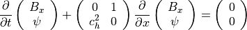
のように、 と は他の変数とは分離して考えることができる。この方程式の固有値、右固有ベクトルはそれぞれ 、 で、通常のMHD方程式に固有値が２つ（ ）加わるため、9 wave法と呼ばれる。
セル境界でのそれぞれの値 は、 、 をそれぞれ左・右状態とした近似リーマン問題の解から、
(130)¶
のようにして求められる。これより、数値フラックス を用いて、式 (129) を有限体積法で解くことができる。式 (125) のソース項を含めた解は、有限体積法で解いた後の値を とすると、
(131)¶
のように、演算子分離してソース項の寄与を解析的に求める。（ここで、 は時刻  における時間刻み幅、 は時刻 の時間更新後の値。）
における時間刻み幅、 は時刻 の時間更新後の値。）
実際の数値計算では、 、 はフリーパラメタとして与える。 は 誤差の（物理的でない）伝搬速度を表す。したがって、数値計算上安定な範囲で任意に決めることができ、MHD方程式から決まるCFL条件となるような速度（ ）で与える。 については、伝搬と拡散のスケールの比較から、 となるように を決めている。数値実験による検証から、 が空間解像度によらず最適な値としてしばしば採用される（cf. Dedner et al. 2002 ）。
Orszag-Tang渦問題のシミュレーション結果。（左）温度。（右）磁場の発散。¶
9 wave法のOrszag-Tang渦問題テスト図 は9 wave法を実装した場合のOrszag-Tang渦問題に適用した結果である。CT法（ 上図 ）に比べて磁場のソレノイダル条件誤差は大きいものの、物理的構造は同様の結果を得られていることがわかる。
以上のように、9 wave法は伝搬速度についても任意に設定することができるため、8 wave法で問題となる流れの澱み点での の蓄積の問題は解消される。いずれにしても、移流拡散法は元の方程式系に対して少しの変更を加えることで容易に導入できることから、計算効率がよい。ただし、8 wave法は保存系ではないので衝撃波捕獲法と組み合わせた場合に、衝撃波のジャンプ条件を正確に満たさないという欠点がある。一方、9 wave法は保存系なのでその問題が回避されるが、解が拡散的になりやすいことが経験的に知られている。
付録¶
HLL型近似リーマン解法の正値性の証明¶
MHD方程式の物理的な解の集合 、
(132)¶
を考える。 に含まれる と の重み付き平均値 、
(133)¶
に対して、密度 と圧力 は、
(134)¶
(135)¶
と表される。したがって、 、 であり、 も に含まれることがわかる。
近似リーマン解法による数値解は、各セル境界におけるリーマン問題の近似解を各セル内で積分したものに等しい。一方、上で示されたとおり、 に含まれる の重み付き平均値は に含まれる。したがって、近似リーマン解法の正値性の保存性を証明するためには、リーマン問題の近似解の正値性を調べればよいことになる。
HLLD近似リーマン解法における 、 の正値性の条件、
(136)¶
(137)¶
(138)¶
(139)¶
について議論しよう。
ここで、次のような変数、
(140)¶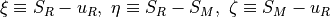
を導入する。 が、例えば (41) -- (43) のように、膨張波も含めた系最大の特性速度よりも小さくならないように与えられるので、 と は常に正である。一方、  は正と負のどちらも取り得る。また、変数の定義から である。
は正と負のどちらも取り得る。また、変数の定義から である。
密度の正値性の条件 (136) 、 (137) は、 (50) 、 (56) から、
(141)¶
と常に満たされることがわかる。
における圧力の正値性の条件 (138) を示すため、
(142)¶
の正値性を証明しよう。 を整理すると、
(143)¶![\varphi &=
\xi e_R - {p_T}_R u_R + p_T^\ast S_M
+ B_x (\mbox{\boldmath$v$}_R \cdot \mbox{\boldmath$B$}_R - \mbox{\boldmath$v$}_R^\ast \cdot \mbox{\boldmath$B$}_R^\ast)
-\eta \frac{\rho_R^\ast |\mbox{\boldmath$v$}_R^\ast|^2}{2}
-\eta \frac{|\mbox{\boldmath$B$}_R^\ast|^2}{2}
\\
&=
\xi
\left( \frac{p_R}{\gamma-1}+\frac{\rho_R |\mbox{\boldmath$v$}_R|^2}{2}+ \frac{|\mbox{\boldmath$B$}_R|^2}{2} \right)
- \left(p_R+\frac{|\mbox{\boldmath$B$}_R|^2}{2} \right) u_R
+ \left(p_R+\frac{|\mbox{\boldmath$B$}_R|^2}{2}+\rho_R \xi \zeta \right) S_M
\\
&\ \ \
+ B_x \left(
- B_x \zeta
- \frac{\rho_R \xi \zeta}{\rho_R \xi \eta - B_x^2} ({\mbox{\boldmath$v$}_t}_R \cdot {\mbox{\boldmath$B$}_t}_R)
+ \frac{B_x \zeta}{\rho_R \xi \eta - B_x^2} |{\mbox{\boldmath$B$}_t}_R|^2
+ \frac{\rho_R B_x \xi \zeta^2}{(\rho_R \xi \eta - B_x^2)^2} |{\mbox{\boldmath$B$}_t}_R|^2 \right)
\\
&\ \ \
- \xi \frac{\rho_R |\mbox{\boldmath$v$}_R^\ast|^2}{2}
- (\xi-\zeta) \frac{|\mbox{\boldmath$B$}_R^\ast|^2}{2}
\\
&=
\frac{p_R \xi}{\gamma-1} + p_R \zeta + \frac{|\mbox{\boldmath$B$}_R|^2}{2} \zeta
+ \rho_R S_M \xi \zeta
\\
&\ \ \
+ \frac{\rho_R (|\mbox{\boldmath$v$}_R|^2-|\mbox{\boldmath$v$}_R^\ast|^2)}{2} \xi
+ \frac{|\mbox{\boldmath$B$}_R|^2-|\mbox{\boldmath$B$}_R^\ast|^2}{2} \xi + \frac{|\mbox{\boldmath$B$}_R^\ast|^2}{2} \zeta
\\
&\ \ \
- B_x^2 \zeta
- \frac{\rho_R B_x ({\mbox{\boldmath$v$}_t}_R \cdot {\mbox{\boldmath$B$}_t}_R)}{\rho_R \xi \eta - B_x^2} \xi \zeta
+ \frac{B_x^2 |{\mbox{\boldmath$B$}_t}_R|^2}{\rho_R \xi \eta - B_x^2} \zeta
+ \frac{\rho_R B_x^2 |{\mbox{\boldmath$B$}_t}_R|^2}{(\rho_R \xi \eta - B_x^2)^2} \xi \zeta^2
\\
&=
\frac{p_R \xi}{\gamma-1} + p_R \zeta
+ \rho_R S_M \xi \zeta
+ \frac{\rho_R (u_R^2-S_M^2)}{2} \xi
\\
&\ \ \
+ \frac{\rho_R (|{\mbox{\boldmath$v$}_t}_R|^2-|{\mbox{\boldmath$v$}_t}_R^\ast|^2)}{2} \xi
+ \frac{|{\mbox{\boldmath$B$}_t}_R|^2-|{\mbox{\boldmath$B$}_t}_R^\ast|^2}{2} \xi
+ \frac{|{\mbox{\boldmath$B$}_t}_R|^2+|{\mbox{\boldmath$B$}_t}_R^\ast|^2}{2} \zeta
\\
&\ \ \
- \frac{\rho_R B_x ({\mbox{\boldmath$v$}_t}_R \cdot {\mbox{\boldmath$B$}_t}_R)}{\rho_R \xi \eta - B_x^2} \xi \zeta
+ \frac{B_x^2 |{\mbox{\boldmath$B$}_t}_R|^2}{\rho_R \xi \eta - B_x^2} \zeta
+ \frac{\rho_R B_x^2 |{\mbox{\boldmath$B$}_t}_R|^2}{(\rho_R \xi \eta - B_x^2)^2} \xi \zeta^2
\\
&=
\frac{p_R \xi}{\gamma-1} + p_R \zeta
+ \frac{\rho_R \xi}{2} \zeta^2
\\
&\ \ \
+ \frac{\rho_R \xi}{2} \left(
\frac{2 B_x ({\mbox{\boldmath$v$}_t}_R \cdot {\mbox{\boldmath$B$}_t}_R)}{\rho_R \xi \eta - B_x^2} \zeta
- \frac{B_x^2 |{\mbox{\boldmath$B$}_t}_R|^2}{(\rho_R \xi \eta - B_x^2)^2} \zeta^2 \right)
\\
&\ \ \
+ \frac{\xi}{2} \left(
- \frac{2 \rho_R |{\mbox{\boldmath$B$}_t}_R|^2}{\rho_R \xi \eta - B_x^2} \xi \zeta
- \frac{\rho_R^2 |{\mbox{\boldmath$B$}_t}_R|^2}{(\rho_R \xi \eta - B_x^2)^2} \xi^2 \zeta^2 \right)
\\
&\ \ \
+ \frac{1}{2} \left(
2 |{\mbox{\boldmath$B$}_t}_R|^2
+ \frac{2 \rho_R |{\mbox{\boldmath$B$}_t}_R|^2}{\rho_R \xi \eta - B_x^2} \xi \zeta
+ \frac{\rho_R^2 |{\mbox{\boldmath$B$}_t}_R|^2}{(\rho_R \xi \eta - B_x^2)^2} \xi^2 \zeta^2 \right)
\zeta
\\
&\ \ \
- \frac{\rho_R B_x ({\mbox{\boldmath$v$}_t}_R \cdot {\mbox{\boldmath$B$}_t}_R)}{\rho_R \xi \eta - B_x^2} \xi \zeta
+ \frac{B_x^2 |{\mbox{\boldmath$B$}_t}_R|^2}{\rho_R \xi \eta - B_x^2} \zeta
+ \frac{\rho_R B_x^2 |{\mbox{\boldmath$B$}_t}_R|^2}{(\rho_R \xi \eta - B_x^2)^2} \xi \zeta^2
\\
&=
\frac{p_R \xi}{\gamma-1} + p_R \zeta +
\frac{\rho_R \xi}{2} \left( 1 - \frac{|{\mbox{\boldmath$B$}_t}_R|^2}{\rho_R \xi \eta - B_x^2} \right)
\zeta^2](_images/math/1a312900f2d7494735bbabb3fd2e88f06f1c4bd6.png)
となる。ただし、 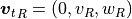 、 。途中、 (47)-- (55) 、
(144)¶
(145)¶
(146)¶
(147)¶
(148)¶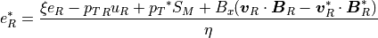
を利用した。ここで、 が系最大の特性速度であることから、 、 となるので、
(149)¶
である。つまり、 が正であれば は必ず正である。 は の二次方程式であり、2次の項の係数は、
(150)¶
から正である 11 。したがって、 の判別式  が負のとき、任意の に対して は正となる。つまり、
が負のとき、任意の に対して は正となる。つまり、
(151)¶
から、
(152)¶
のとき、正値性の条件 (138) は満たされる。ただし、導出過程で、
(153)¶
を利用した。最終的に正値性の条件は、
(154)¶
となり、 は明らかにこの条件を満たす。
続いて、 における圧力の正値性の条件 (139) は、
(155)¶
と示される。
、 の正値性の条件は、対称性から、
(156)¶
となり、 は容易にこの条件を満たす。
以上、リーマン問題の近似解、 、 、 、 の正値性が示された。したがって、HLLD近似リーマン解法は正値性を保存する解法である。
また、HLL近似リーマン解法における近似解は、HLLD近似リーマン解法における近似解の重み付き平均値として与えられる。したがって、HLL近似リーマン解法も正値性を保存する解法である。
Footnotes
 のとき、 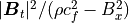 は となる。ただし、 では、
のとき、 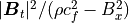 は となる。ただし、 では、 {kind=link}
{kind=link}
{kind=link}
{kind=link}
{kind=link}
{kind=link}
{kind=link}
{kind=link}
HLLD近似リーマン解法のサンプルプログラム¶
HLLD近似リーマン解法のサンプルプログラムを示す。
Fortran90:
!-------------------------------------------------------------------------------
subroutine calc_flux_hlld(rol,vnl,vtl,vul,btl,bul,prl, &
ror,vnr,vtr,vur,btr,bur,prr, &
bnc, &
fro,fmn,fmt,fmu,fbt,fbu,fen)
!-------------------------------------------------------------------------------
real(DP), intent(IN) :: rol,vnl,vtl,vul,btl,bul,prl
real(DP), intent(IN) :: ror,vnr,vtr,vur,btr,bur,prr
real(DP), intent(IN) :: bnc
real(DP), intent(OUT) :: fro,fmn,fmt,fmu,fbt,fbu,fen
real(DP), parameter :: eps=1.D-40
real(DP) :: bnc2,sgn
real(DP) :: roli,pml,ptl,enl,vbl
real(DP) :: rori,pmr,ptr,enr,vbr
real(DP) :: cl2,cal2,cbl2,cfl2,cfl
real(DP) :: cr2,car2,cbr2,cfr2,cfr
real(DP :: sr,sl
real(DP) :: slvl,srvr,rslvl,rsrvr,drsvi
real(DP) :: vnc,ptc
real(DP) :: slvc,rhdl,rhdli,rhnvl,rhnbl
real(DP) :: srvc,rhdr,rhdri,rhnvr,rhnbr
real(DP) :: ro2l,vt2l,vu2l,bt2l,bu2l,vb2l,en2l
real(DP) :: ro2r,vt2r,vu2r,bt2r,bu2r,vb2r,en2r
real(DP) :: rro2l,rro2r,rro2i
real(DP) :: vt3m,vu3m,bt3m,bu3m,vb3m,en3l,en3r
real(DP) :: rou,vtu,vuu,btu,buu,enu
!...............................................................................
! Bn at the interface
!...............................................................................
bnc2 = bnc**2
sgn = sign(1.0_DP,bnc)
!...............................................................................
! variables at the left-face
!...............................................................................
roli = 1.0_DP/rol
pml = 0.5_DP*(btl**2+bul**2)
ptl = prl+pml
enl = gammam1i*prl+pml+0.5_DP*rol*(vnl**2+vtl**2+vul**2)
vbl = vtl*btl+vul*bul
!...............................................................................
! variables at the right-face
!...............................................................................
rori = 1.0_DP/ror
pmr = 0.5_DP*(btr**2+bur**2)
ptr = prr+pmr
enr = gammam1i*prr+pmr+0.5_DP*ror*(vnr**2+vtr**2+vur**2)
vbr = vtr*btr+vur*bur
!...............................................................................
! maximum / minimum wave speeds
!...............................................................................
cl2 = gamma*prl*roli
cr2 = gamma*prr*rori
cal2 = bnc2*roli
car2 = bnc2*rori
cbl2 = cl2+cal2+2.0_DP*pml*roli
cbr2 = cr2+car2+2.0_DP*pmr*rori
cfl2 = 0.5_DP*(cbl2+sqrt(abs(cbl2**2-4.0_DP*cl2*cal2)))
cfr2 = 0.5_DP*(cbr2+sqrt(abs(cbr2**2-4.0_DP*cr2*car2)))
cfl = sqrt(cfl2)
cfr = sqrt(cfr2)
sl = min(0.0_DP,min(vnl,vnr)-max(cfl,cfr))
sr = max(0.0_DP,max(vnl,vnr)+max(cfl,cfr))
!...............................................................................
! HLL average of the normal velocity and the total pressure
!...............................................................................
slvl = sl-vnl
srvr = sr-vnr
rslvl = rol*slvl
rsrvr = ror*srvr
drsvi = 1.0_DP/(rsrvr-rslvl)
vnc = (rsrvr*vnr-rslvl*vnl-ptr+ptl)*drsvi
ptc = (rsrvr*ptl-rslvl*ptr+rsrvr*rslvl*(vnr-vnl))*drsvi
!...............................................................................
! variables of the outer sides in the Riemann fan
!...............................................................................
slvc = sl-vnc
srvc = sr-vnc
ro2l = rslvl/slvc
ro2r = rsrvr/srvc
rhdl = rslvl*slvc-bnc2
rhdr = rsrvr*srvc-bnc2
if(abs(rhdl) > eps) then
rhdli = 1.0_DP/rhdl
rhnvl = (vnl-vnc)*bnc
rhnbl = rslvl*slvl-bnc2
vt2l = vtl+rhnvl*rhdli*btl
vu2l = vul+rhnvl*rhdli*bul
bt2l = rhnbl*rhdli*btl
bu2l = rhnbl*rhdli*bul
else
vt2l = vtl
vu2l = vul
bt2l = btl
bu2l = bul
end if
if(abs(rhdr) > eps) then
rhdri = 1.0_DP/rhdr
rhnvr = (vnr-vnc)*bnc
rhnbr = rsrvr*srvr-bnc2
vt2r = vtr+rhnvr*rhdri*btr
vu2r = vur+rhnvr*rhdri*bur
bt2r = rhnbr*rhdri*btr
bu2r = rhnbr*rhdri*bur
else
vt2r = vtr
vu2r = vur
bt2r = btr
bu2r = bur
end if
vb2l = vt2l*bt2l+vu2l*bu2l
vb2r = vt2r*bt2r+vu2r*bu2r
en2l = (slvl*enl-ptl*vnl+ptc*vnc+bnc*(vbl-vb2l))/slvc
en2r = (srvr*enr-ptr*vnr+ptc*vnc+bnc*(vbr-vb2r))/srvc
!...............................................................................
! variables of the inner sides in the Riemann fan
!...............................................................................
rro2l = sqrt(ro2l)
rro2r = sqrt(ro2r)
rro2i = 1.0_DP/(rro2r+rro2l)
vt3m = (rro2r*vt2r+rro2l*vt2l+ (bt2r-bt2l)*sgn)*rro2i
vu3m = (rro2r*vu2r+rro2l*vu2l+ (bu2r-bu2l)*sgn)*rro2i
bt3m = (rro2l*bt2r+rro2r*bt2l+rro2r*rro2l*(vt2r-vt2l)*sgn)*rro2i
bu3m = (rro2l*bu2r+rro2r*bu2l+rro2r*rro2l*(vu2r-vu2l)*sgn)*rro2i
vb3m = vt3m*bt3m+vu3m*bu3m
en3l = en2l-rro2l*(vb2l-vb3m)*sgn
en3r = en2r+rro2r*(vb2r-vb3m)*sgn
!...............................................................................
! variables at the interface
!...............................................................................
if(vnc-abs(bnc)/rro2l > 0.0_DP) then
rou = ro2l
vtu = vt2l
vuu = vu2l
btu = bt2l
buu = bu2l
enu = en2l
else if((vnc-abs(bnc)/rro2l <= 0.0_DP).and.(vnc >= 0.0_DP))then
rou = ro2l
vtu = vt3m
vuu = vu3m
btu = bt3m
buu = bu3m
enu = en3l
else if((vnc < 0.0_DP).and.(vnc+abs(bnc)/rro2r >= 0.0_DP))then
rou = ro2r
vtu = vt3m
vuu = vu3m
btu = bt3m
buu = bu3m
enu = en3r
else
rou = ro2r
vtu = vt2r
vuu = vu2r
btu = bt2r
buu = bu2r
enu = en2r
end if
!...............................................................................
! HLLD fluxes
!...............................................................................
fro = rou*vnc
fmn = rou*vnc*vnc+ptc-bnc2*0.5_DP
fmt = rou*vtu*vnc-bnc*btu
fmu = rou*vuu*vnc-bnc*buu
fbt = btu*vnc-bnc*vtu
fbu = buu*vnc-bnc*vuu
fen = (enu+ptc)*vnc-bnc*(vtu*btu+vuu*buu)
!-------------------------------------------------------------------------------
end subroutine calc_flux_hlld
!-------------------------------------------------------------------------------
C:
#include <math.h>
inline double max(double a, double b)
{
return( (a > b)?a:b );
}
inline double min(double a, double b)
{
return( (a > b)?b:a );
}
#define EPS (1e-8)
void calc_flux_hlld(double rol, double vnl, double vtl, double vul, double btl,
double bul, double prl,
double ror, double vnr, double vtr, double vur, double btr,
double bur, double prr,
double bnc, double gamma,
double *fro, double *fmn, double *fmt, double *fmu, double *fbt,
double *fbu, double *fen)
/* Calculate HLLD fluxes */
/* rol,vnl,vtl,vul,btl,bul,prl: input primitive variables at the left side */
/* ror,vnr,vtr,vur,btr,bur,prr: input primitive variables at the right side */
/* bnc: input normal magnetic field at the interface */
/* gamma: specific heat ratio */
/* fro,fmn,fmt,fmu,fbt,fbu,fen: output HLLD fluxes at the interface*/
{
double gammam1i=1.0/(gamma-1.0);
/* Bn at the interface */
double bnc2=bnc*bnc;
int sgn=(bnc > 0)?(1):(-1);
/* Variables at the left-face */
double roli=1.0/rol;
double pml=0.5*(btl*btl+bul*bul);
double ptl=prl+pml;
double enl=gammam1i*prl+pml+0.5*rol*(vnl*vnl+vtl*vtl+vul*vul);
double vbl=vtl*btl+vul*bul;
/* Variables at the right-face */
double rori=1.0/ror;
double pmr=0.5*(btr*btr+bur*bur);
double ptr=prr+pmr;
double enr=gammam1i*prr+pmr+0.5*ror*(vnr*vnr+vtr*vtr+vur*vur);
double vbr=vtr*btr+vur*bur;
/* Maximum/minimum wave speeds */
double cl2=gamma*prl*roli;
double cr2=gamma*prr*rori;
double cal2=bnc2*roli;
double car2=bnc2*rori;
double cbl2=cl2+cal2+2.0*pml*roli;
double cbr2=cr2+car2+2.0*pmr*rori;
double cfl2=0.5*(cbl2+sqrt(fabs(cbl2*cbl2-4.0*cl2*cal2)));
double cfr2=0.5*(cbr2+sqrt(fabs(cbr2*cbr2-4.0*cr2*car2)));
double cfl=sqrt(cfl2);
double cfr=sqrt(cfr2);
double sl=min(0.0,min(vnl,vnr)-max(cfl,cfr));
double sr=max(0.0,max(vnl,vnr)+max(cfl,cfr));
/* HLL average of the normal velocity and the total pressure */
double slvl=sl-vnl;
double srvr=sr-vnr;
double rslvl=rol*slvl;
double rsrvr=ror*srvr;
double drsvi=1.0/(rsrvr-rslvl);
double vnc=(rsrvr*vnr-rslvl*vnl-ptr+ptl)*drsvi;
double ptc=(rsrvr*ptl-rslvl*ptr+rsrvr*rslvl*(vnr-vnl))*drsvi;
/* Variables of the outer sides in the Riemann fan */
double slvc=sl-vnc;
double srvc=sr-vnc;
double ro2l=rslvl/slvc;
double ro2r=rsrvr/srvc;
double rhdl=rslvl*slvc-bnc2;
double rhdr=rsrvr*srvc-bnc2;
double vt2l,vu2l,bt2l,bu2l;
double vt2r,vu2r,bt2r,bu2r;
if (fabs(rhdl) > EPS){
double rhdli=1.0/rhdl;
double rhnvl=(vnl-vnc)*bnc;
double rhnbl=rslvl*slvl-bnc2;
vt2l=vtl+rhnvl*rhdli*btl;
vu2l=vul+rhnvl*rhdli*bul;
bt2l=rhnbl*rhdli*btl;
bu2l=rhnbl*rhdli*bul;
} else{
vt2l=vtl;
vu2l=vul;
bt2l=btl;
bu2l=bul;
}
if (fabs(rhdr) > EPS){
double rhdri=1.0/rhdr;
double rhnvr=(vnr-vnc)*bnc;
double rhnbr=rsrvr*srvr-bnc2;
vt2r=vtr+rhnvr*rhdri*btr;
vu2r=vur+rhnvr*rhdri*bur;
bt2r=rhnbr*rhdri*btr;
bu2r=rhnbr*rhdri*bur;
} else{
vt2r=vtr;
vu2r=vur;
bt2r=btr;
bu2r=bur;
}
double vb2l=vt2l*bt2l+vu2l*bu2l;
double vb2r=vt2r*bt2r+vu2r*bu2r;
double en2l=(slvl*enl-ptl*vnl+ptc*vnc+bnc*(vbl-vb2l))/slvc;
double en2r=(srvr*enr-ptr*vnr+ptc*vnc+bnc*(vbr-vb2r))/srvc;
/* Variables of the inner sides in the Riemann fan */
double rro2l=sqrt(ro2l);
double rro2r=sqrt(ro2r);
double rro2i=1.0/(rro2r+rro2l);
double vt3m=(rro2r*vt2r+rro2l*vt2l+(bt2r-bt2l)*sgn)*rro2i;
double vu3m=(rro2r*vu2r+rro2l*vu2l+(bu2r-bu2l)*sgn)*rro2i;
double bt3m=(rro2l*bt2r+rro2r*bt2l+rro2r*rro2l*(vt2r-vt2l)*sgn)*rro2i;
double bu3m=(rro2l*bu2r+rro2r*bu2l+rro2r*rro2l*(vu2r-vu2l)*sgn)*rro2i;
double vb3m=vt3m*bt3m+vu3m*bu3m;
double en3l=en2l-rro2l*(vb2l-vb3m)*sgn;
double en3r=en2r+rro2r*(vb2r-vb3m)*sgn;
/* Variables at the interface */
double rou,vtu,vuu,btu,buu,enu;
if (vnc-fabs(bnc)/rro2l > 0){
rou=ro2l;
vtu=vt2l;
vuu=vu2l;
btu=bt2l;
buu=bu2l;
enu=en2l;
} else{
if (vnc >= 0){
rou=ro2l;
vtu=vt3m;
vuu=vu3m;
btu=bt3m;
buu=bu3m;
enu=en3l;
} else{
if (vnc+fabs(bnc)/rro2r >= 0){
rou=ro2r;
vtu=vt3m;
vuu=vu3m;
btu=bt3m;
buu=bu3m;
enu=en3r;
} else{
rou=ro2r;
vtu=vt2r;
vuu=vu2r;
btu=bt2r;
buu=bu2r;
enu=en2r;
}
}
}
/* HLLD fluxes */
*fro=rou*vnc;
*fmn=rou*vnc*vnc+ptc-bnc2*0.5;
*fmt=rou*vtu*vnc-bnc*btu;
*fmu=rou*vuu*vnc-bnc*buu;
*fbt=btu*vnc-bnc*vtu;
*fbu=buu*vnc-bnc*vuu;
*fen=(enu+ptc)*vnc-bnc*(vtu*btu+vuu*buu);
}
注釈
数値計算量を削減するため、 、 とするなど、できるだけ代数的に整理している。
注釈
if文が計算が遅い場合は、sign関数を用いてプログラムを書き換えることができる。
rhdli = 1.0_DP/(rhdl+0.5_DP-sign(0.5_DP,abs(rhdl)-eps))
rhdri = 1.0_DP/(rhdr+0.5_DP-sign(0.5_DP,abs(rhdr)-eps))
hl = 0.5_DP+sign(0.5_DP,vnc)
hr = 1.0_DP-hl
h2l = 0.5_DP+sign(0.5_DP,vnc-dabs(bnc)/rro2l)
h3l = (1.0_DP-h2l)*hl
h2r = 0.5_DP-sign(0.5_DP,vnc+dabs(bnc)/rro2r)
h3r = (1.0_DP-h2r)*hr
rou = ro2l*hl+ro2r*hr
vsu = vs2l*h2l+vs3m*h3l+vs3m*h3r+vs2r*h2r
vtu = vt2l*h2l+vt3m*h3l+vt3m*h3r+vt2r*h2r
bsu = bs2l*h2l+bs3m*h3l+bs3m*h3r+bs2r*h2r
btu = bt2l*h2l+bt3m*h3l+bt3m*h3r+bt2r*h2r
enu = en2l*h2l+en3l*h3l+en3r*h3r+en2r*h2r
注釈
MHD方程式の流束は回転対称なので、上の1次元数値流束サブルーチンをそのまま多次元計算に利用できる。有限体積的なアプローチであれば、非構造格子も含むカーテシアン座標以外でも利用できる。
・・・
vn = vy
vt = vz
vu = vx
・・・
call calc_flux_hlld(rol,vnl,vtl,vul,・・・
・・・
fmx_y = fmu
fmy_y = fmn
fmz_y = fmt
・・・